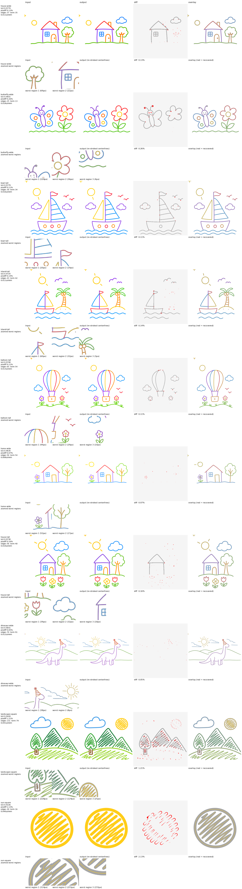

PNG: contact-comparison-pygeoops.png
| image | backend | tol | elems | IoU | symdiff% | bdistP95 | edges | terminals | junctions | s/elem | pixdiff% |
|---|---|---|---|---|---|---|---|---|---|---|---|
| house-wide | pygeoops | 0.15 | 19 | 0.9774 | 2.28 | 1.327 | 37 | 35 | 11 | 0.011 | 0.13 |
| butterfly-wide | pygeoops | 0.15 | 13 | 0.9651 | 3.51 | 0.524 | 25 | 13 | 9 | 0.018 | 0.26 |
| boat-tall | pygeoops | 0.15 | 22 | 0.9779 | 2.23 | 0.333 | 30 | 34 | 4 | 0.016 | 0.11 |
| island-tall | pygeoops | 0.15 | 24 | 0.9725 | 2.78 | 0.532 | 43 | 42 | 14 | 0.011 | 0.14 |
| balloon-tall | pygeoops | 0.15 | 28 | 0.9740 | 2.63 | 0.438 | 65 | 54 | 20 | 0.013 | 0.11 |
| home-wide | pygeoops | 0.15 | 28 | 0.9635 | 3.69 | 1.064 | 50 | 54 | 14 | 0.008 | 0.07 |
| house-tall | pygeoops | 0.15 | 27 | 0.9730 | 2.72 | 0.972 | 56 | 40 | 20 | 0.010 | 0.16 |
| dinosaur-wide | pygeoops | 0.15 | 42 | 0.9651 | 3.57 | 1.127 | 70 | 91 | 15 | 0.012 | 0.05 |
| landscape-square | pygeoops | 0.15 | 14 | 0.9420 | 5.95 | 3.484 | 131 | 79 | 59 | 0.041 | 1.21 |
| sun-square | pygeoops | 0.15 | 2 | 0.9226 | 8.12 | 3.859 | 30 | 16 | 14 | 0.040 | 2.13 |

{kind=link}